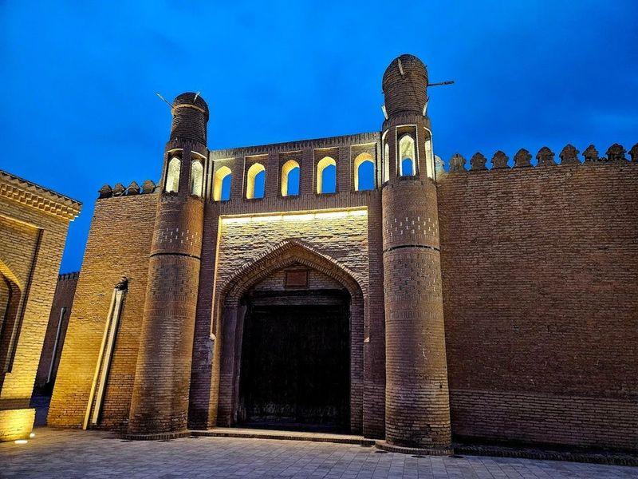
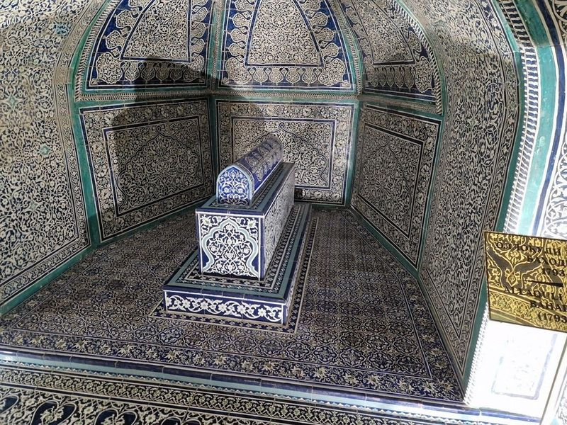
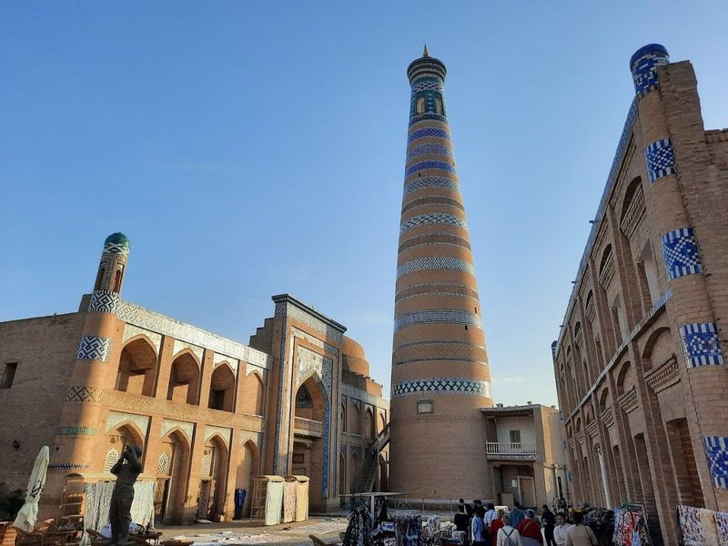
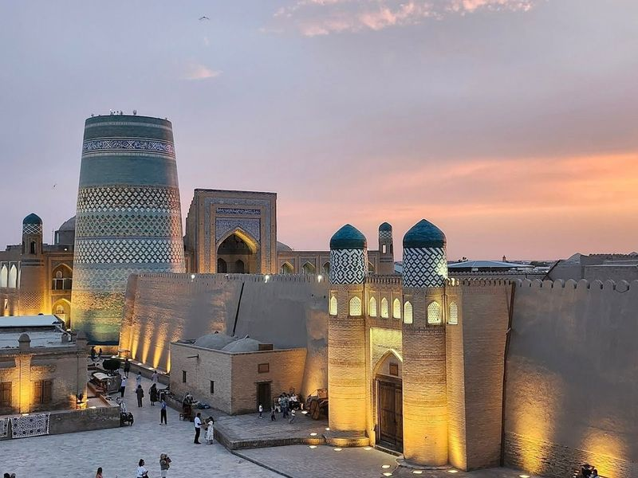
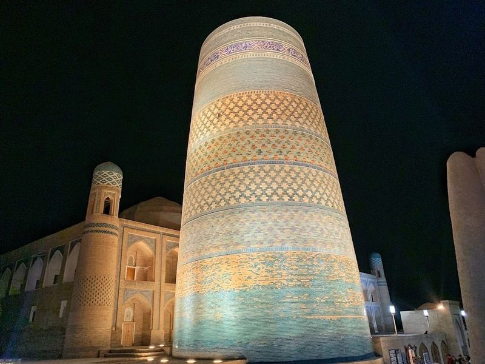
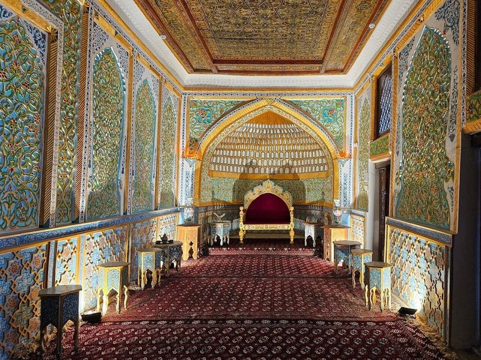

Explore Khiva
A Brief History
Khiva's Itchan Kala inner town preserves Kunya Ark, madrasas, and minarets from Khorezm khanate rule on the Amu Darya delta. Turquoise tilework and mud-brick fortifications record how oasis cities sustained Silk Road exchange in western Uzbekistan. Islam Khoja minaret views and craft workshops animate the mud-brick Itchan Kala within the Kyzylkum fringe.
Attractions Map
Top Sights & Activities

Toshhovli Palace
Toshhovli Palace, translating to "Stone House," is a magnificent 19th-century structure that showcases the opulence of Khiva's rulers. Constructed between 1832 and 1841 by Allakuli Khan, this architectural marvel boasts over 150 rooms arranged around nine courtyards, all designed with high ceilings to capture the gentle desert breeze. Visitors can admire its interior adorned with intricate tile mosaics and exquisite wood carvings.

Islam Khoja Minaret
Islam Khoja Minaret, the tallest minaret in Uzbekistan at 57 meters, is a striking symbol of Khiva's Itchan Kala. Built in the early 1900s, its design reflects the architecture of the early Middle Ages. Visitors can ascend to a lookout platform at 45 meters for views of the city. The adjacent Islam Khoja Complex includes a mausoleum and madrasa, offering insight into local history and craftsmanship.

Juma Mosque
The Juma Mosque, also known as the Friday Mosque, is a significant place for communal prayer on Fridays. Dating back to the 10th century and renovated multiple times, it stands out with its unique layout and architecture. Unlike other Islamic mosques, it lacks an inner courtyard but features a large hall supported by over 200 splendidly carved wooden columns creating a cozy atmosphere.

Itchan Kala
Ichan Kala is the ancient walled city of Khiva, encompassing an area with a rich history and architectural marvels. The legendary walls, stretching over 2 kilometers, are adorned with towers and fortified gates. These clay brick structures, dating back to the 17th-18th century, stand as a formidable divider between historic and modern Khiva. The inner city of Ichan-Kala is separated from the outer city by thick walls that are more than 10 meters high.

Kalta Minor Minaret
Kalta Minor Minaret, also known as the Short Tower, is a striking landmark in Khiva, Uzbekistan. Commissioned in 1851 by Mohammed Amin Khan, this squat turquoise minaret was meant to reach a towering height of 70 meters but stands at 26 meters due to the ruler's untimely death. Despite its incomplete stature, Kalta Minor is an unmistakable symbol of Khiva and holds the distinction of being the only completely tiled minaret in Central Asia.

Kuhna Ark
Nestled in the heart of Khiva, the Kuhna Ark stands as a magnificent testament to centuries of history and architectural brilliance. This fortress, originally constructed in the 12th century and expanded over time, served as both a royal residence for khans and a formidable defensive stronghold. Its ornate gateway is flanked by two impressive towers, leading visitors into an enchanting world adorned with blue tiles that reflect its rich heritage.